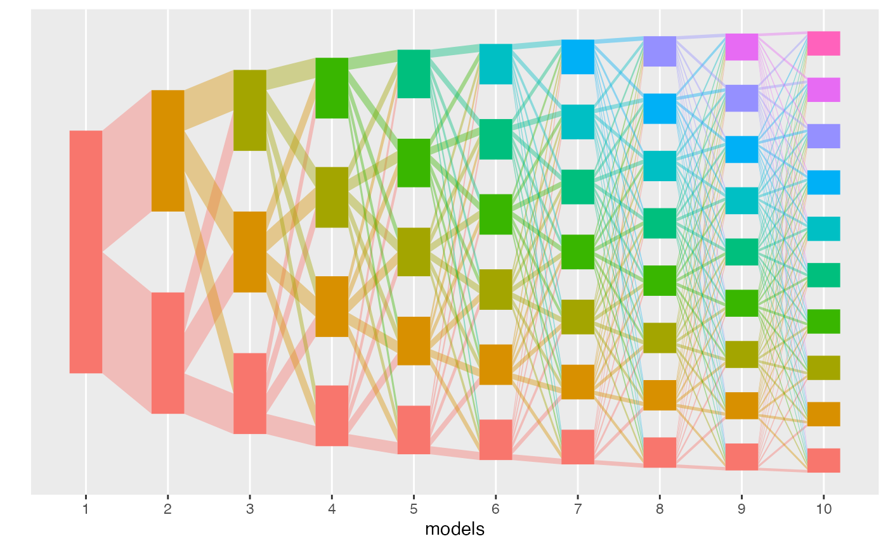
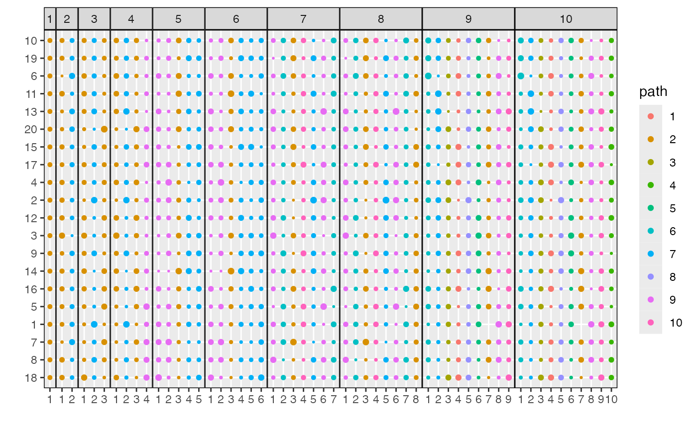
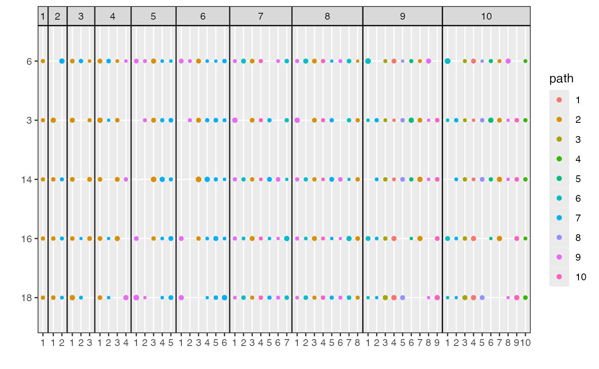
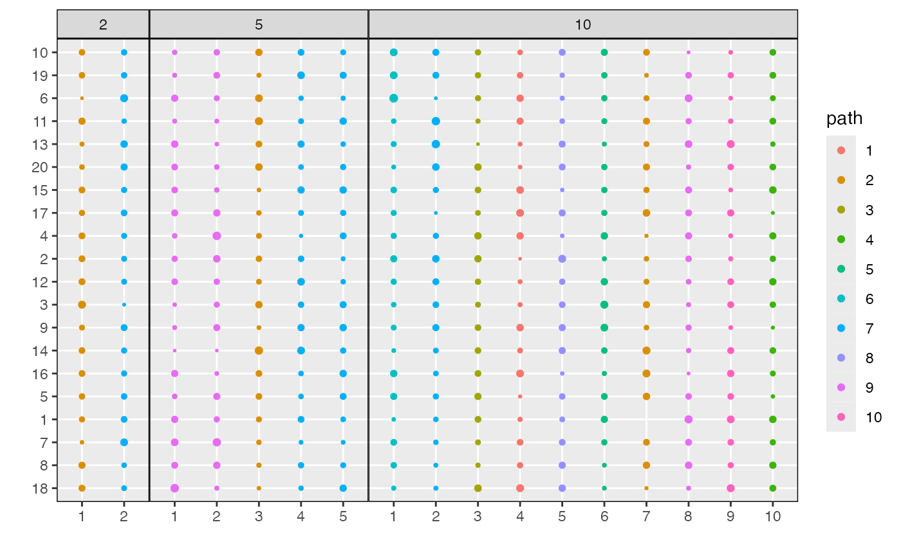
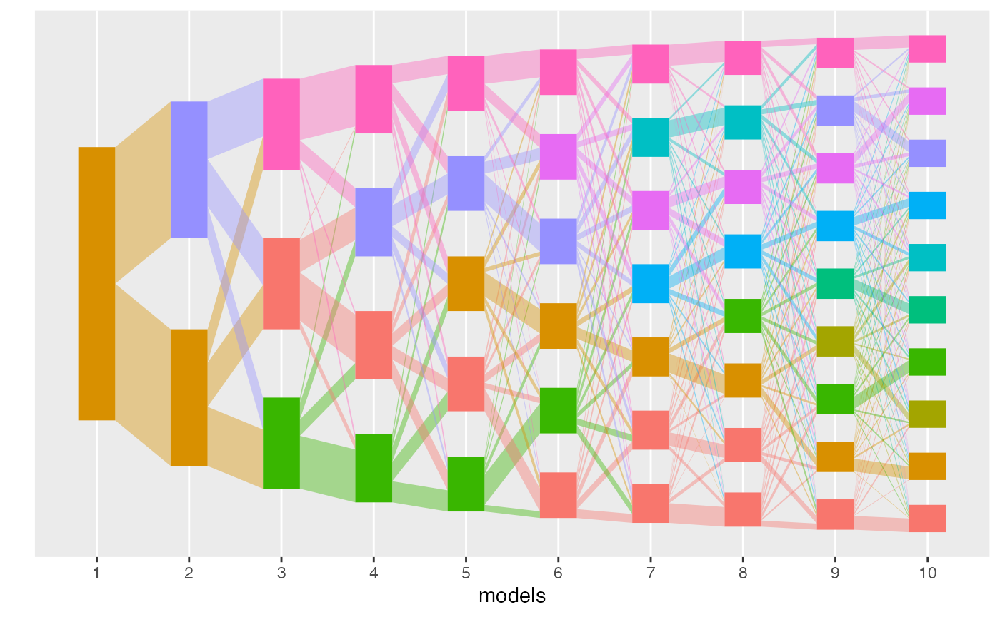

Introduction to Alignment
basic-alignment.RmdThis vignette describes the main functions of the alto package on a simple simulated dataset. We will introduce,
-
run_lda_modelsfor fitting a sequence of LDA models to a fixed dataset -
align_topicsfor aligning topics across a set of fitted models -
plotandplot_betafor displaying the results
First, we load some packages that are used in this vignette.
library(alto)
#>
#> Attaching package: 'alto'
#> The following object is masked from 'package:stats':
#>
#> weights
library(purrr)
library(stringr)
set.seed(123)Next, we simulate a dataset (50 samples with 20 dimensions each) samples and run a sequence of LDA models to it. The data, x, are all independent multinomials and there is no low-rank structure for any models to learn. Nonetheless, it is sufficient for illustrating the package.
The arguments to run_lda_models are the matrix x and a list of lists, lda_params, which specifies how hyperparameters are to be varied across the sequence of models. The \(i^{th}\) element of the list contains hyperparameters that will be used in the \(i^{th}\) model fit. Any hyperparmeters that are accepted by topicmodels::LDA can be passed into these internal lists. We use map to construct a list whose \(i^{th}\) element specifies that the \(i^{th}\) LDA model should fit \(k = i\) topics.
x <- rmultinom(20, 500, rep(0.1, 50))
colnames(x) <- seq_len(ncol(x))
lda_params <- setNames(map(1:10, ~ list(k = .)), 1:10)
lda_models <- run_lda_models(x, lda_params)
#> Using default value 'VEM' for 'method' LDA parameter.
#> Using default value 'VEM' for 'method' LDA parameter.
#> Using default value 'VEM' for 'method' LDA parameter.
#> Using default value 'VEM' for 'method' LDA parameter.
#> Using default value 'VEM' for 'method' LDA parameter.
#> Using default value 'VEM' for 'method' LDA parameter.
#> Using default value 'VEM' for 'method' LDA parameter.
#> Using default value 'VEM' for 'method' LDA parameter.
#> Using default value 'VEM' for 'method' LDA parameter.
#> Using default value 'VEM' for 'method' LDA parameter.The output of this function is a list of two element lists. The first element are the mixed-membership estimates \(\gamma\). This is an \(N \times K\) matrix specifying the membership of each sample across the \(K\) topics. THe second element are the estimated topic log-probabilities, \(\log\beta\). This is a \(K \times D\) matrix whose rows give the log probabilities for each dimension within that topic.
Given this output, we can compute a tpoic alignment. This is done by the align_topics function. By default, the product method is used to compute weights (below, we show how to use the transport or more custom methods).
This function returns an object of class alignment. Its print method shows the topic weights between pairs of topics across models. The first two columns give the index \(m\) of the models from the input. The next two columns give the index \(k\) of topics within those models. For example, the first row gives the alignment between the first topics estimated in the \(K = 1\) and \(K = 2\) models. Since there is no low-rank structure in this model, all outgoing weights from a given topic are equal.
result <- align_topics(lda_models)
result
#> # An alignment: 10 models, 55 topics:
#> # A tibble: 6 x 8
#> m m_next k k_next weight document_mass bw_weight fw_weight
#> <fct> <fct> <int> <int> <dbl> <dbl> <dbl> <dbl>
#> 1 1 2 1 1 0.500 25.0 1 0.500
#> 2 1 2 1 2 0.500 25.0 1 0.500
#> 3 1 3 1 1 0.333 16.7 1 0.333
#> 4 1 3 1 2 0.333 16.7 1 0.333
#> 5 1 3 1 3 0.333 16.7 1 0.333
#> 6 1 4 1 1 0.250 12.5 1 0.250
#> # … with 1314 more rowsWe can access the full weights (not just the first few rows), by using the weights method.
weights(result)
#> # A tibble: 1,320 x 8
#> m m_next k k_next weight document_mass bw_weight fw_weight
#> <fct> <fct> <int> <int> <dbl> <dbl> <dbl> <dbl>
#> 1 1 2 1 1 0.500 25.0 1 0.500
#> 2 1 2 1 2 0.500 25.0 1 0.500
#> 3 1 3 1 1 0.333 16.7 1 0.333
#> 4 1 3 1 2 0.333 16.7 1 0.333
#> 5 1 3 1 3 0.333 16.7 1 0.333
#> 6 1 4 1 1 0.250 12.5 1 0.250
#> 7 1 4 1 2 0.250 12.5 1 0.250
#> 8 1 4 1 3 0.250 12.5 1 0.250
#> 9 1 4 1 4 0.250 12.5 1 0.250
#> 10 1 5 1 1 0.200 10.0 1 0.200
#> # … with 1,310 more rowsThe align_topics function also computes a few per-topic measures. These can be accessed using topics. For example, mass describes the total mass \(\sum_{i = 1}^{n}\gamma_{ik}^{m}\) for topic \(k\) in model \(m\). The prop column normalizes the mass column according to the total mass within that model. branch specifies which overall branch each topic belongs to (this corresponds to colors in the flow diagrams below). Coherence and refinement are complementary measures of topic quality. For details on their properties, please refer to the manuscript accompanying this package.
topics(result)
#> # A tibble: 55 x 7
#> m k mass prop branch coherence refinement
#> <fct> <int> <dbl> <dbl> <fct> <dbl> <dbl>
#> 1 1 1 50 1 2 0.214 1
#> 2 2 1 25.0 0.500 2 0.214 0.500
#> 3 2 2 25.0 0.500 10 0.179 0.500
#> 4 3 1 16.7 0.333 2 0.196 0.333
#> 5 3 2 16.7 0.333 8 0.157 0.333
#> 6 3 3 16.7 0.333 10 0.179 0.333
#> 7 4 1 12.5 0.250 2 0.177 0.250
#> 8 4 2 12.5 0.250 9 0.141 0.250
#> 9 4 3 12.5 0.250 8 0.157 0.250
#> 10 4 4 12.5 0.250 10 0.168 0.250
#> # … with 45 more rowsAn alternative measure is the key_topics measure. This looks at how many topics have similar descendents across resolution levels, and it can be accessed using the compute_number_of_key_topics function,
compute_number_of_key_topics(result, plot=TRUE)
#> # A tibble: 10 x 3
#> m n_key_topics n_topics
#> <fct> <int> <int>
#> 1 1 1 1
#> 2 2 2 2
#> 3 3 3 3
#> 4 4 4 4
#> 5 5 5 5
#> 6 6 6 6
#> 7 7 7 7
#> 8 8 8 8
#> 9 9 9 9
#> 10 10 10 10Visualizations
The information in the weights and topics functions can be displayed visually using the alignment class’ plot method. Each column in the flow diagram corresponds to one model, and each rectangle gives a topic. The height of each rectangle gives the topic mass defined above. The size of the edges between rectangles corresponds to the weight of that edge in the alignment. In this multinomial dataset, the perfect “fanning” structure suggests that there is no topic structure – there are no emergent branches. This makes sense, since there is no low-rank structure when simulating a 50-dimensional multinomial.
plot(result)By default, plot shades each topic and edge in according to its branch membership. We could alternatively color by refinement, robustness, or topic ID.
plot(result, color_by = "refinement")
plot(result, color_by = "coherence")
plot(result, color_by = "topic")
To understand the content of the topics, we can use plot_beta. This shows the probabilities \(\beta_{kd}^{m}\) across topics and models. Dimensions are sorted from those with the highest distinctiveness across topics to those with the lowest. By default, all dimensions \(d\) with at least one \(\beta_{kd}^{m} > 0.001\) will be displayed. This can be adjusted using the min_beta parameter. For clarity, circles with \(\beta_{kd}^{m} < \text{min_beta}\) are not shown.
plot_beta(result)
plot_beta(result, min_beta = 0.05)Alternatively, we can filter the number of dimensions shown using the n_features parameter.
plot_beta(result, n_features = 5)
Finally, we can visualize topics associated with subsets of models, either by specifying the name of that model in the lda_models list or giving the model index.


plot_beta(result, "last")Alternative Alignments
We can compute an alignment using the transport approach using the method argument.
result <- align_topics(lda_models, method = "transport")
plot(result)
align_topics computes an alignment sequentially across the input gamma and beta lists. In principle, an alignment can be computed between arbitrary pairs of topics. This functionality is supported by the align_graph function. For example, we can fit an alignment between all pairs of topics, across all models.
edges <- alto:::setup_edges("all", names(lda_models))
gamma <- map(lda_models, ~ .$gamma)
beta <- map(lda_models, ~ .$beta)
align_graph(edges, gamma, beta, transport_weights)
#> # A tibble: 1,320 x 8
#> m m_next k k_next weight document_mass bw_weight fw_weight
#> <fct> <fct> <int> <int> <dbl> <dbl> <dbl> <dbl>
#> 1 1 2 1 1 0.500 25.0 1 0.500
#> 2 1 2 1 2 0.500 25.0 1 0.500
#> 3 1 3 1 1 0.333 16.7 1 0.333
#> 4 1 3 1 2 0.333 16.7 1 0.333
#> 5 1 3 1 3 0.333 16.7 1 0.333
#> 6 1 4 1 1 0.250 12.5 1 0.250
#> 7 1 4 1 2 0.250 12.5 1 0.250
#> 8 1 4 1 3 0.250 12.5 1 0.250
#> 9 1 4 1 4 0.250 12.5 1 0.250
#> 10 1 5 1 1 0.200 10.0 1 0.200
#> # … with 1,310 more rowsFinally, arbitrary weight methods can be passed to align_graph. The only requirement is that, given pairs of matrices of mixed-memberships and log-topics between two models, the function must return a data.frame of weights between all pairs of topics. The transport_weights function above is an example,
transport_weights(gamma[1:2], beta[1:2])
#> # A tibble: 2 x 3
#> k k_next weight
#> <chr> <chr> <dbl>
#> 1 1 1 25.0
#> 2 1 2 25.0Here is a dummy example that always returns a weight of 0 between all pairs of topics.
dummy_weights <- function(gamma, beta) {
zeros <- matrix(0, ncol(gamma[[1]]),nrow(gamma[[2]]))
alto:::.lengthen_weights(data.frame(zeros))
}
align_graph(edges, gamma, beta, weight_fun = dummy_weights)
#> # A tibble: 8,250 x 8
#> m m_next k k_next weight document_mass bw_weight fw_weight
#> <fct> <fct> <int> <int> <dbl> <dbl> <dbl> <dbl>
#> 1 1 2 1 1 0 0 NaN NaN
#> 2 1 2 1 2 0 0 NaN NaN
#> 3 1 2 1 3 0 0 NaN NaN
#> 4 1 2 1 4 0 0 NaN NaN
#> 5 1 2 1 5 0 0 NaN NaN
#> 6 1 2 1 6 0 0 NaN NaN
#> 7 1 2 1 7 0 0 NaN NaN
#> 8 1 2 1 8 0 0 NaN NaN
#> 9 1 2 1 9 0 0 NaN NaN
#> 10 1 2 1 10 0 0 NaN NaN
#> # … with 8,240 more rows